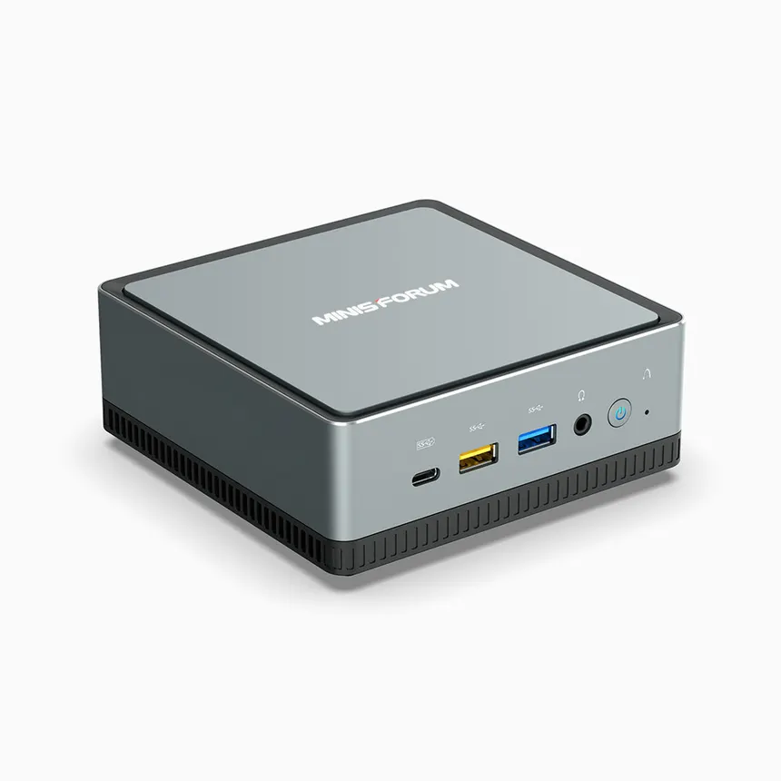

Starting a homelab is one of the best ways to learn real-world IT skills. A homelab can start with just a single computer that you don't actively use. It allows you to experiment with servers, networking, storage, and cybersecurity and dip your toes into the professional field that operate large data centers on a day to day basis.
Where do I start?
The best way to start, like with any new hobby, is to start simple. See if you have an old, used computer laying around that you can reuse. As you start getting limited by the hardware that you have look into investing for a miniPC(pictured on the right) sold by companies like MinisForum. MiniPCs excel at providing high performance computing in a small form factor and tend to be power efficient as well which can help reduce the ongoing cost of your homelab